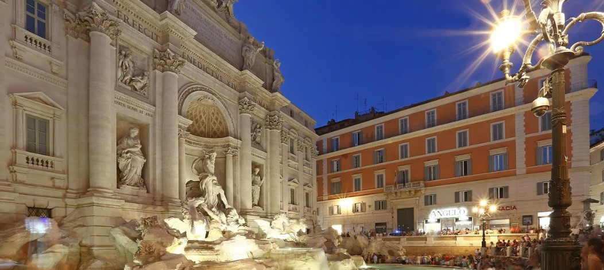

|
Hotel NYX - Cancún Situado frente al Mar Caribe, Hotel NYX Cancún es un hotel de playa en la Zona Hotelera de la ciudad. Dispone 2 piscinas, spa y Wi-Fi gratuito. Se encuentra a 10 minutos caminando del centro comercial La Isla Shopping Village y a 4 km de la Discoteca Coco Bongo Precio por persona $908.367.- Vuelo + Alojamiento (todo incluido) |
|  |
Liberty Vatican Suites - Roma Ubicación del establecimiento En Liberty Vatican Suites gozarás de una ubicación céntrica en Roma, a poca distancia de Río Tiber y Basílica de San Pedro. Este hostal se encuentra cerca de Castel Sant'Angelo y de Ponte Sant'Angelo Precio por persona $3.034.327.- Vuelo + Alojamiento (todo incluido) |
|
London City Hotel - Londres Al hospedarte en London City Hotel, estarás en pleno corazón de Londres, a pocos pasos de Guy's Hospital y de London Dungeon. Este hotel se encuentra cerca de London Bridge y de St. Paul's Cathedral. Precio por persona $3.116.566.- Vuelo + Alojamiento (todo incluido) |